Chapter Eight
Other Related Ideas
page 8989. As we noted in Section 20, Chapter Two, one of the most important inspirations man had in the development of his mathematical ideas was the invention of the symbol for zero. It is probable that this was suggested by the empty wire on the abacus, so that it stands for the ‘empty set’. Five hundred years ago it was looked upon with suspicion, even learned men were reluctant to accept the idea of a symbol for ‘nothing’, but today the concept of 0 and 1 forms the basis of logical thinking and is the main feature of the Binary notation on which the arithmetic of Electronic Computers is built.
90. In the last chapter we examined the relationships of alternatives. That is to say, we were thinking in every case of just two conditions combined in one way or another. But in problems of industrial management, finance, electronics, and science in general; as well as in problems of housing, transport, and any situation where classification or selection is involved, there are many factors to be taken into account. Problems which consist of multiple choice elements must first be analysed and broken down into sets of alternatives. When we make a rational choice we always choose between two alternatives. If we do otherwise our choice is random and unlikely to be fully effective.
An electronic computer can ‘Compare’ two numbers, and ‘Choose’ one rather than another, and the responsibility of the ‘programmer’ is to break down the multiple choice problem which is to be dealt with into its component alternatives and translate them into the numerical form the computer is designed to handle. In the questions on Section 14 we had an example of this, and in this chapter we will carry the technique a little farther.
91. The model we used for two combined conditions was two interlocked circles. Three conditions will need three circles. When two circles were interlocked they formed four distinctpage 90 areas, 2² = 4 areas. With three circles, 2³ = 8 areas. But 2⁴ = 16 areas, and we might expect there to be 2⁴ patterns. But 2⁸ = 256, which seems a great many patterns out of such a simple diagram.
In the previous chapter we found each different pattern represented a different combination of the two conditions. If this is true of the present case it means that three conditions may be combined in two hundred and fifty-six different ways. We must investigate this further.
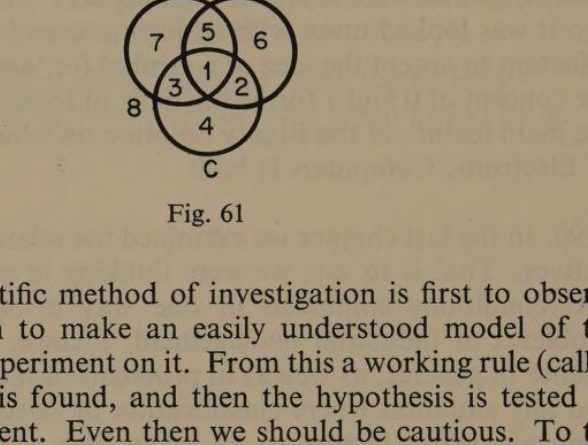
92. The scientific method of investigation is first to observe behaviour, then to make an easily understood model of the situation and experiment on it. From this a working rule (called an hypothesis) is found, and then the hypothesis is tested by further experiment. Even then we should be cautious. To the true scientist all knowledge is constantly under review. The most we can ever do is to find an explanation which best fits the facts. But the best fit is only an approximation in the light of our present understanding. For hundreds of years men were able to ‘explain’ the movement of the Solar System by considering the Earth as the centre around which the rest revolved. Believing Man to be the most important creature in the Universe, they easily allowed their observations to persuade them the Earth occupied the central position. But the scientific mind constantly searches for what it knows it can never find—the complete truth. We must always be prepared to find out that we were wrong.
93. We will now consider the behaviour of elements of a set being grouped in various ways.
[1] Four boys were supposed to go to the dentist. In how many different groups could they go?
| (a) They could not go. This would be a group of none. | 1 group |
| (b) Each could go alone. | 4 groups |
| (c) They could go in pairs: (AB, AC, AD, BC, BD, CD). | 6 groups |
| (d) They could go in threes: (ABC, ABD, ACD, BCD). | 4 groups |
| (e) They could go in fours: (ABCD). | 1 group |
| Total | 16 groups |
[2] In how many different ways could two boys catch the measles? Not at all (1); separately (2); together (1): total, 4.
[3] Three girls wanted to go to the cinema. In how many different ways could they decide to use their money?
| (a) They could decide not to go. | 1 way |
| (b) They could let one girl (A, B, or C) go. | 3 ways |
| (c) They could let two girls (AB, AC, or BC) go. | 3 ways |
| (d) They could all go together. | 1 way |
| Total | 8 ways |
If we now put these facts in order:
| Elements | Groups | Rule |
|---|---|---|
| 2 | 4, i.e. 2² | The number of groupings is ‘two raised to the power of the number of elements’. |
| 3 | 8, i.e. 2³ | |
| 4 | 16, i.e. 2⁴ |
Generally, with n elements, the possible groups are 2ⁿ.†
† Note: Ignoring ‘order’, i.e. A,B = B,A.
94. We can test the hypothesis of the last paragraph to our problem in this way. By enclosing an area we divide the surface into two parts—inside and outside. Where another area overlaps the first one, it must cut it into two parts, and at the same time it must form a new inside and outside out of the surrounding area. Thus, each added area which intersects all the previous ones doubles the number of areas in the diagram (see diagrams 3 and 4). Each circle represents a condition and is an element of a set which clearly accumulates by the rule we found, i.e. 2ⁿ.page 92 This number of areas then becomes the element of another set which is subject to the grouping law (like the boys going to the dentist). This will be clearer if you study the diagrams below.
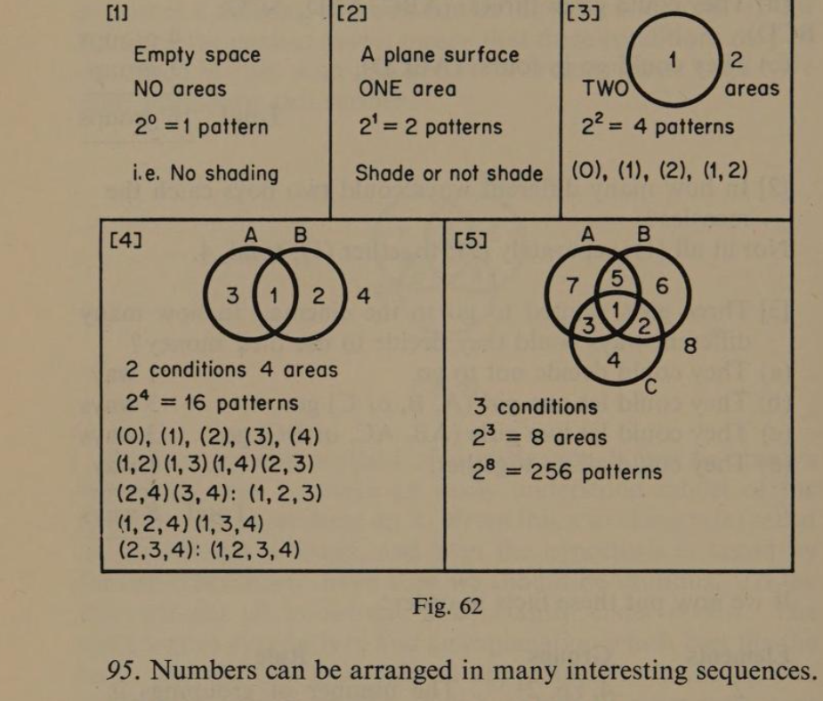
[1] Empty space, no areas. 2⁰ = 1 pattern (no shading). [2] A plane surface, one area. 2¹ = 2 patterns (shade or not shade). [3] Two areas. 2² = 4 patterns: (0), (1), (2), (1,2). [4] 2 conditions, 4 areas. 2⁴ = 16 patterns. [5] 3 conditions, 8 areas. 2⁸ = 256 patterns.
95. Numbers can be arranged in many interesting sequences.
| (a) The natural numbers are: | 1 2 3 4 5 6 7 8 … |
| (b) The ‘odd’ numbers are: | 1 3 5 7 9 11 … |
| (c) The ‘even’ numbers are: | 2 4 6 8 10 12 … |
The familiar products of our Multiplication Tables form other sequences, some of which have recognisable patterns:
| (d) | 11 22 33 44 55 66 77 88 99 … |
| (e) | 5 10 15 20 25 … |
| (f) | 9 18 27 36 45 … |
Here are three less familiar sequences:
| (g) | 1 4 9 16 25 36 49 … |
| (h) | 1 3 6 10 15 21 28 … |
| (i) | 1 2 3 5 7 11 13 … |
page 93 One famous arrangement of numbers we will find useful in our present enquiry. They form a large triangle and first appeared in print in 1527.† This was used by a great French mathematician, Blaise Pascal (1623–62), and have become known as
| Line | Sequence | Total 2ⁿ |
|---|---|---|
| 0 | 1 | 1 |
| 1 | 1 1 | 2 |
| 2 | 1 2 1 | 4 |
| 3 | 1 3 3 1 | 8 |
| 4 | 1 4 6 4 1 | 16 |
Study this pattern of numbers carefully. When you have seen how it is constructed, copy it and continue until you get to line 9, i.e. the tenth line. I hope you will have seen the connection it has with the grouping of elements, but if you haven’t, look again through Section 93 before going on.
† Sanford, Short History of Maths, p. 177.
96. Pascal’s Triangle to the ninth line looks like this:
| Line | Sequences | Totals |
|---|---|---|
| 0 | 1 | 1 |
| 1 | 1 1 | 2 |
| 2 | 1 2 1 | 4 |
| 3 | 1 3 3 1 | 8 |
| 4 | 1 4 6 4 1 | 16 |
| 5 | 1 5 10 10 5 1 | 32 |
| 6 | 1 6 15 20 15 6 1 | 64 |
| 7 | 1 7 21 35 35 21 7 1 | 128 |
| 8 | 1 8 28 56 70 56 28 8 1 | 256 |
If you look up the number of conditions you are dealing with in the line column, you will find the number of areas in the diagram which represent them in the totals column on the opposite side. If you look up that number of areas in the totals column you will find the number of patterns that can be made with them in the totals column opposite.
page 94 Can you see this double use of the triangle? Here are two examples:
[1] Problems governed by 2 conditions are represented by 2 circles. Looking up 2 in the line column tells us there are 4 areas. Looking up 4 in the line column tells us there are 16 patterns.
[2] Three conditions can be represented by 3 circles. Line 3 of the triangle tells us there are 8 areas. And line 8 of the triangle would tell us there are 256 patterns.
97. We can obtain more detailed information from the Triangle than merely the total number of arrangements possible with a given set of elements. If you refer back to the problem of the boys going to the dentist (Section 93) you will see that with four boys there were sixteen arrangements. To find this out we had to imagine all the ways they could group themselves.
| No boys | 1 group | See line 4 of Pascal’s Triangle |
| Individually | 4 groups | |
| In pairs | 6 groups | |
| In threes | 4 groups | |
| Altogether | 1 group |
The four boys were the four elements of the set we had to consider, and Pascal’s triangle line 4 is precisely the list we want. When we are trying to decide how many patterns can be made, it is the number of areas available which is the set of elements.
Example: If there were five areas we could make different patterns as follows:
| None shaded | 1 pattern | Line 5 of the Triangle gives all this information. |
| Separate areas | 5 patterns | |
| Double areas | 10 patterns | |
| Triple areas | 10 patterns | |
| In fours | 5 patterns | |
| All shaded | 1 pattern | |
| Total | 32 patterns |
page 95 Pascal also used this number triangle to solve a problem about the chances of success in a gambling game. He was the first to realise its wider applications to problems involving expansions like (a + b)ⁿ, and this is another example of the birth of a mathematical idea of great importance conceived as the result of a comparatively trifling matter.
98. You may be surprised, if not incredulous, when you discover that 6 conditions can be combined in
18,446,744,073,709,551,616 ways.
6 conditions would require 6 overlapped boundaries and line 6 of the Triangle tells us there would then be 2⁶ = 64 areas. Therefore, the number of different patterns (which represent the combination of conditions) is 2⁶⁴, which is the number quoted above.
Diagrams as a means of explaining mathematical ideas are very useful, but they have their limitations. Sooner or later the diagram becomes more confusing than the idea it was meant to clarify. Here is a typical example! When we first learn about indices and ‘raising to powers’, the expressions ‘squared’ and ‘cubed’ are often used and we are shown models like these:
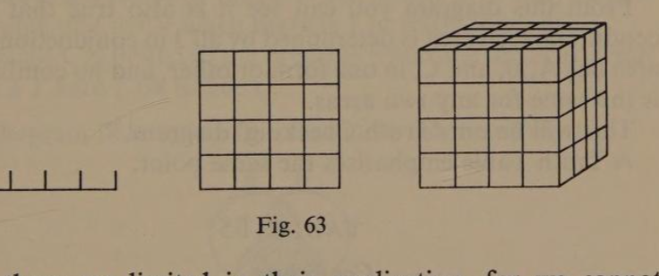
But these are limited in their application, for we cannot visualise n⁴ or any greater ‘dimension’. We may think of 5² as a point in space, but we cannot imagine 5³, it would have to be space turned inside out. Nevertheless, although powers <0 and >3 are unreal as dimensions, point, line, area, and solid are useful ways of illustrating n⁰, n¹, n², and n³. Mathematics is the study of abstract ideas, and to get the most out of it we should use diagrams only until we have grasped the underlying notion, so that we may then discard the model and develop further the mental concepts we have formed.
99. page 96 The diagram of 3-condition relationships is analysed below. As a model it may be nearing the limit of its usefulness. If you copy and study it carefully it will help you to answer the eighth review. If you get it clear in your mind you will the more easily deal with the Algebra on its own when we can no longer illustrate it.
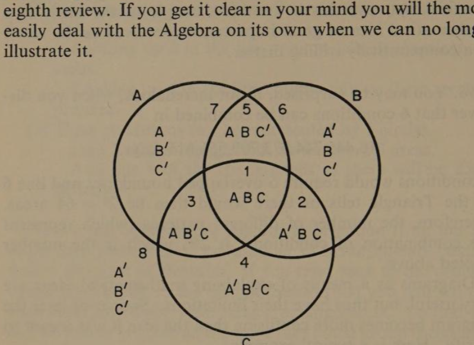
In Section 74 we saw that each area in 2-conditional relationships was uniquely determined by 2 conditions in conjunction. From this diagram you can see it is also true that with 3 conditions each area is determined by all 3 in conjunction. Each area has A, B, and C, in one form or other, and no combination is the same for any two areas. This will be our ‘Truth Checking’ diagram. A Truth Table emphasises the same point.
| Area | Conditions A B C | Algebra | ||
|---|---|---|---|---|
| 1 | 1 | 1 | 1 | ABC |
| 2 | 0 | 1 | 1 | A′BC |
| 3 | 1 | 0 | 1 | AB′C |
| 4 | 0 | 0 | 1 | A′B′C |
| 5 | 1 | 1 | 0 | ABC′ |
| 6 | 0 | 1 | 0 | A′BC′ |
| 7 | 1 | 0 | 0 | AB′C′ |
| 8 | 0 | 0 | 0 | A′B′C′ |
page 97 Notice the pattern of the numbers in the table. When dealing with conditions by means of brackets, as we first did in Section 83, care must be taken in translating the situation into Algebra. Consider this example: When asked what vegetables she would prefer, Jean said, ‘I will have carrots and turnips if they are mixed, or peas.’ We might translate that into: [AB] ∨ C = 1. Then we could proceed to make out a Truth Table, and from it draw a diagram to illustrate her choice.
| Area No. | [A ∧ B] | Truth value | ∨ C | Final Truth Value |
|---|---|---|---|---|
| 1 | 1 ∧ 1 | 1‡ | 1 | 1† |
| 2 | 0 1 | 0 | 1 | 1† |
| 3 | 1 0 | 0 | 1 | 1† |
| 4 | 0 0 | 0 | 1 | 1† |
| 5 | 1 1 | 1‡ | 0 | 1† |
| 6 | 0 1 | 0 | 0 | 0 |
| 7 | 1 0 | 0 | 0 | 0 |
| 8 | 0 0 | 0 | 0 | 0 |
‡ Because the terms in brackets are linked by ∧ they have a Truth value of 1 only when there is 1 in both columns.
† Because C is linked to the brackets by ∨ the final Truth value is a 1 here ‡ or under C.
The diagram illustrating this should be examined closely.
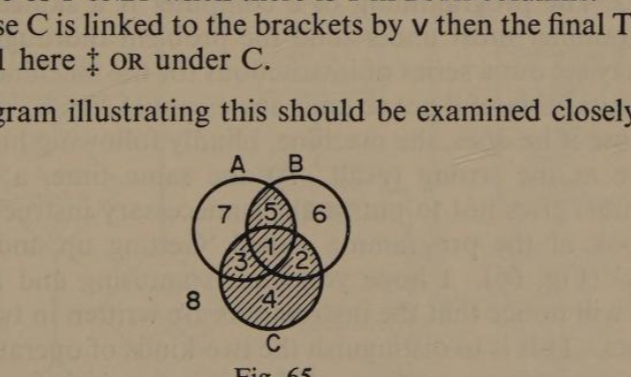
Think about the implication of the shading in Areas 2 and 3.
100. You are now probably saying to yourself, ‘What a clumsy way of deciding what vegetables to order. If you had to make out a Truth Table and draw a diagram before serving the meal, it would be spoiled before you got it. Anybody wouldpage 98 know right away that she wouldn’t have either carrots or turnips singly, or either of them with peas.’
And, of course, you are quite right. Anybody would know because as we said at the beginning of the book, our minds are quite wonderful in their ability to analyse the factors of a situation and out of them build a rational choice. But the question we are discussing is how to do this kind of thing with machines. The explanation is that we did not ‘programme’ the problem properly. We had not taken into account that Jean will only have carrots or turnips if they are mixed, or either of them with peas; we must be certain to exclude them, separately. The Algebra is not [AB] ∨ C it is [AB] ∨ [A′B′C].
101. This Algebra is designed for machines. Machines cannot think, they can only obey, and their operation is controlled by valves or transistors and the circuits through which the electricity flows. Computers are amazing devices. They can work on problems for days without suffering fatigue and they are incredibly fast in their operation. But it is the human mind of the ‘programmer’ which has to do all their true thinking for them.
102. The programming of a computer is a skilled job. The programmer must understand the problem thoroughly so that he may set out a series of instructions for the machine to follow. He must be careful not to omit any essential step however small, because if he does, the machine, blindly following his plan, will arrive at the wrong result. At the same time, a good programmer tries not to put in any unnecessary instructions.
Look at the programme called ‘Getting up and going to work’ (Fig. 66). I hope you find it amusing and instructive. You will notice that the instructions are written in two kinds of frames. This is to distinguish the two kinds of operations which the computer can perform. When it is a straightforward arithmetical process, the instruction is put in a rectangular frame, but when there has to be a choice made, the instruction is put in a rhomboidal or diamond-shaped frame so that the programmer can easily distinguish them when he is checking the programme. These always indicate a Yes/No situation and I have shown this by using the symbols 1 and 0.page 99 Trace the circuit in a number of different ways by sometimes following the ‘yes’ path, and at other times following the ‘no’ path. The programme as it is written is faulty. Perhaps you would like to discover in what way.
Try to make out a programme for a familiar task like ‘Washing up’ or ‘Cooking a meal’. Don’t forget the golden rule that no essential step must be left out. If you can manage to include some ‘choice’ questions, these will make your programme seem more like the real thing.
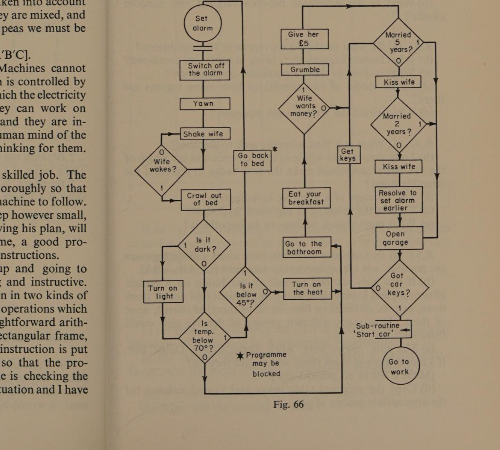
Eighth Review
R.89. (a) What may have suggested the need for a zero symbol?
(b) What symbols are used in Binary Notation?
(c) What are the equivalents for 1 and 0 in an electrical circuit?
R.90. (a) ‘John couldn’t make up his mind whether to buy a Cream Chocolate bar, a Caramel bar, or a Nut Chocolate bar.’ Say how he could break down his problem, so that he always chooses between two alternatives, and still takes into account all the possibilities.
(b) What is the difference between rational and random choice?
R.91. (a) By what model do we represent two conditions?
(b) What feature suggests their being in some way combined?
(c) What is done to show a particular combination?
(d) In the model of two conditions how many regions are there?
(e) What would the whole area represent?
R.92. (a) What is it that scientists seek to discover?
(b) Look through the whole of this sentence and say which of the 111 characters would make the best badge to represent the scientific mind?
(c) List the steps of a scientific investigation.
(d) Explain the meaning of the word ‘hypothesis’.
(e) What must always be done to an hypothesis?
R.93. (a) In a set of n elements, how many different groups are possible, not taking order into account? [i.e. AB = BA].
(b) If five girls planned to visit an exhibition on a certain afternoon, and I went there at 3 p.m., I might find one of them there, or two, or three, or four, or all of them, or indeed, none of them. How many different groups of five girls could there be?
(c) The girls’ names were, Alice, Betty, Cicely, Daisy, Eve. If I found three of them there, who might they be? [Make a list of all possibilities.]
(d) Copy the prepared table below and in each column list the appropriate groups of girls.page 101 For convenience you may use the initial letters of their names (A, B, C, D, and E) to distinguish them.
| None | Ones | Twos | Threes | Fours | Fives |
|---|---|---|---|---|---|
| TOTALS | |||||
R.94. (a) This paragraph illustrated how extra conditions caused a greater increase in areas, which in turn resulted in a very rapid increase in the number of patterns. Look at these two sequences of numbers:
| A.P. | 1 2 3 4 5 6 7 |
| G.P. | 3 9 27 81 243 729 |
In the first, the difference between successive terms is always the same. The series is an Arithmetical Progression. In the second, the difference results from a multiplicative factor, and the series is called a Geometric Progression.
(i) In what ratio is the G.P. accelerating?
(ii) What will the seventh term be?
page 102 (b) Copy the table below and set out the facts regarding the growth of areas and patterns as the result of added conditions. The first five columns can be completed by consulting Section 94, the sixth column should then be filled in on your own.
| [1] | [2] | [3] | [4] | [5] | [6] | |
|---|---|---|---|---|---|---|
| Conditions | 0 | 1 | 2 | 3 | 4 | |
| Areas | ||||||
| Patterns |
(c) What is the regular increment of the conditions?
(d) In what kind of progression are they?
(e) What kind of progression do the areas form?
(f) If the number of conditions is n what is the increment rate of: (i) The areas? (ii) The patterns?
(g) Each additional circle doubles the number of areas. Is it possible to make 16 areas with 4 circles? (Practise on scrap paper first.)
(h) Draw a diagram having 16 areas for 4 conditions.
(i) If the number of circles [or other irregular boundary] is c the number of areas may be expressed as 2ᶜ. Express the number of patterns in the same way.
R.95. The letter-references of the questions correspond to those in the original paragraph which you should consult.
(a) Write the next three numbers of the first sequence.
(b) Write the next three ‘odd’ numbers.
(c) How do you recognise ‘even’ numbers? Write the next three.
(d) Write the next three numbers in that sequence.
(e) How do you recognise numbers divisible by 5?
(f) Write the next three in sequence (f). What do you notice about the sum of the digits? What happens to the digits after 45?
(g) What is special about this sequence?page 103 Write the next three. Look again at the sequence of ‘odd’ numbers.
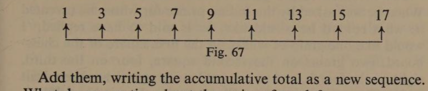
Add them, writing the accumulative total as a new sequence. What do you notice about the series of totals?
(h) If a grocer piles cans so that every upper one bridges the two underneath it, the total number of cans he will need for n layers will be the n-th number in this sequence.
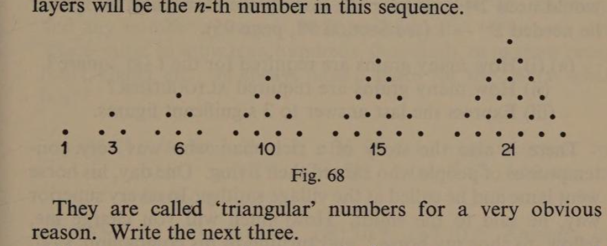
They are called ‘triangular’ numbers for a very obvious reason. Write the next three. Now sum the natural numbers in the same way we summed the odd numbers in (g) above. What do you find?
(i) What is special about this sequence? Write the next three.
(j) What is the name of the famous arrangement of numbers from which these five totals are taken? 1 2 4 8 16. We could write 2¹ 2² 2³ 2⁴. What should we then write before 2¹? What number would this represent? Each term is doubled. What then is the term before 1? What ‘power of 2’ would represent it?
R.96. (a) 2³ = 2 × 2 × 2 = 8. From Pascal’s Triangle find 3⁴.
(b) How many areas in a diagram illustrating 5 conditions?
(c) Which line of the Triangle would give the number of patterns?
(d) In how many different groups could 6 boys be arranged, ignoring order?
R.97. (a) How many different groups of 3 can be taken from 7?
(b) What is the total of line ten of Pascal’s Triangle (not the tenth line)?
R.98. page 104 The surprising growth under the process of doubling has given rise to a number of interesting stories.
The inventor of the game of Chess was a mathematician. When he was asked by the Indian prince for whom he invented it, what reward he would like, he is said to have replied, ‘I would like one grain of wheat on the first square of the chess-board, two grains on the second square, four on the third, eight on the fourth, and so on, until every square has been dealt with.’ The prince agreed readily, but when he tried to fulfil his part of the bargain he discovered there wasn’t enough wheat in the world. As there are 64 squares on a chessboard he would need 2⁶³ grains for the last square alone, and altogether he needed 2⁶⁴ − 1 (see Section 98, page 95).
(a) (i) How many grains are required for the last square?
(ii) How many grains are required altogether?
(iii) Express the last answer to 3 significant figures.
There is also the story of a rich man who was very contemptuous of people who earned their living. One day, his horse went lame and he called at the village smithy. In a very superior way, he said to the smith, ‘How much will you charge me, fellow, to shoe my horse?’ and turning to his companion, said, ‘I expect it will take him an age to reckon it, as I expect such people can hardly cypher.’ The blacksmith was a very intelligent man and knew a lot about numbers because he used to amuse himself thinking about them as he worked at his forge, replied, ‘I will let your lordship choose. You may pay me a golden sovereign for each shoe, or one penny for the first nail, two pennies for the second, four pennies for the third, and so on.’
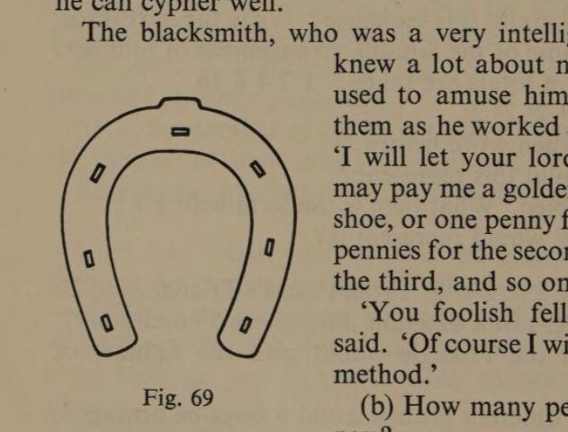
‘You foolish fellow,’ the rich man said. ‘Of course I will choose the second method.’
(b) How many pence did he have to pay? Study this drawing of a horse-shoe before answering and then consult the table in Section 137 (page 159).
(c) In what way are mathematical diagrams useful?
(d) In what way are they limited?
(e) If 2³ = 2 × 2 × 2. What does 2² equal?page 105
(f) When we first saw Pascal’s Triangle in Section 95 the end column was headed 2ⁿ. The letter n stood for the line number. The lines were numbered from 0. With these line numbers as indices, the totals along each line match the powers of 2; e.g. line 3 total = 2³ = 8. Thus, the meaning we gave to 2⁰ was 1. In the same sort of way, 1,000 = 10³; 100 = 10²; 10 = 10¹; and 1 = 10⁰. 10⁰ or 2⁰ is only a method of indicating the ‘units’ position. What is 5⁰?
(g) What does 3⁰ mean? What does 12⁰ mean?
(h) Mathematics began with the simple act of counting, and any number system is built up of ‘units’. When we use ‘place-value’ to show tens, hundreds, thousands, or to show twos, fours, eights, etc., we always have a place for the units: what is n⁰?
(i) If 2² = 4: and 2¹ = 2: and 2⁰ = 1: then (i) 2⁻¹ (ii) 2⁻² (iii) 2⁻³ (iv) 2⁻⁴? Answers in fractions.
(j) Try (i) 10⁻¹ (ii) 10⁻² (iii) 10⁻³ (iv) 10⁻⁴? Answers in decimals.
R.99. (a) Which area of the basic diagram is AB, but not C?
(b) Which areas would you shade to indicate BC?
(c) What conditions of A, B, C, are indicated by area 4?
(d) What areas would you shade to indicate that a proposition is bound to be effective?
(e) How would you indicate ∅?
(f) What areas denote B′?
(g) Using Binary notation indicate A′BC′.
(h) In column A of the Truth Table how are the symbols 1, 0 arranged?
(i) What is the arrangement in the B column?
(j) What is it in the C column?
(k) Why is this regular array insisted upon?
R.100. (a) What is meant by the complement of an expression?
(b) What is the function of brackets?
(c) What was the implication of area 2 being shaded?
(d) What was the implication of area 3 being shaded?
R.101. page 106 (a) What was the suggested reason for getting the wrong result?
(b) What governs the ‘thinking’ of a computer?
(c) Name two ways in which computers are superior to brains?
(d) In what way is the human mind superior to the best computer?
It was pointed out how very careful one must be when translating a situation into Algebra or illustrating it by means of a diagram. It is a question of clear thinking, and is very much the problem of the programmer who must make absolutely certain that the instructions he gives the machine are complete without being superfluous. The next few pages are exercises similar to those of Chapter Seven, but this time you will be dealing with three conditions instead of two. In each case, unless other instructions are given, you should supply whichever is missing of: (a) Diagram; (b) Algebra; or (c) Statement.
Read these notes first
- Inside the top left circle = A, outside it is A′.
- Inside the top right circle = B, outside it is B′.
- Inside the bottom circle = C, outside it is C′.
- Shading represents the effective area according to the relationship between the conditions.
- A means both together—can be omitted. Thus, AB = A ∧ B. ∨ means either or both. ⊻ means Either, but not both. It can be replaced by a compound expression: A ⊻ B ↔ AB′ ∨ A′B
- Brackets indicate that the terms inside are to be treated jointly before considering the relationship with another.
- This must be taken into account when using a Truth Table.
- When 1 or 2 conditions only have to be illustrated the extra circle(s) has/have been ignored.
page 107 (e) Supply the Algebra and a diagram for:
[1] I will go for a walk tonight if it is fine.
[2] I will go alone or with anyone except John.
[3] Now copy the diagram and supply the Algebra.
[4] Draw the diagram of the given Algebra.
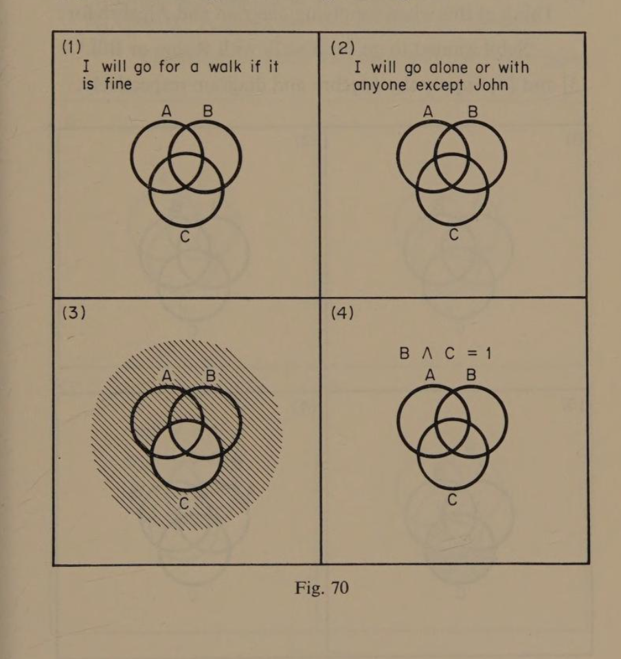
page 108 (f) Give the Algebra and the diagram which represent:
[1] The men agreed to call off the strike if they were given a rise of 10% and/or a monthly bonus of 25% on increased production.
[2] There is an old saying, ‘Two’s company, three’s none.’ Think of this when supplying diagram and Algebra for: ‘Sybil wanted to go for a walk with Robin or Bill.’
[3] and [4] Supply the Algebra and diagram respectively.
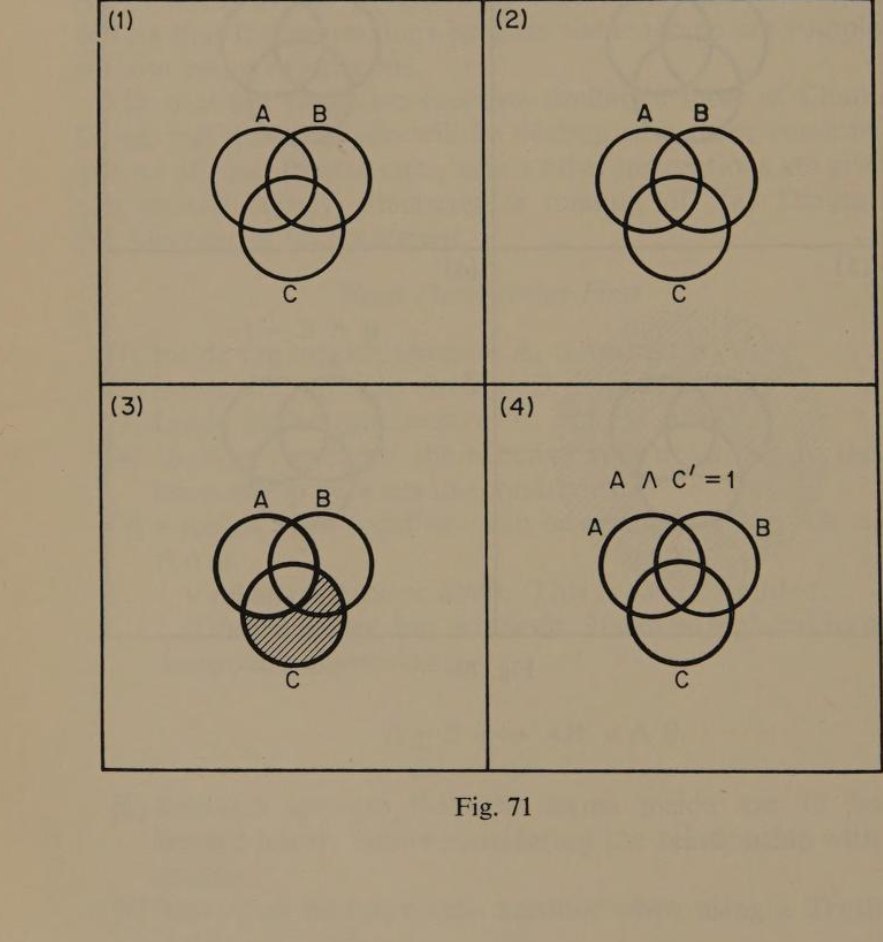
page 109 (g) [1] Draw the diagram and give the Algebra for: ‘The applicant must have qualifications in English and French or English and Spanish.’
[2] Draw the diagram to represent A ∨ B′.
[3] Draw the diagram of AB ∨ A′B′.
[4] Give the Algebra and the diagram to represent: ‘Get from the baker’s a crusty loaf that is not burnt.’
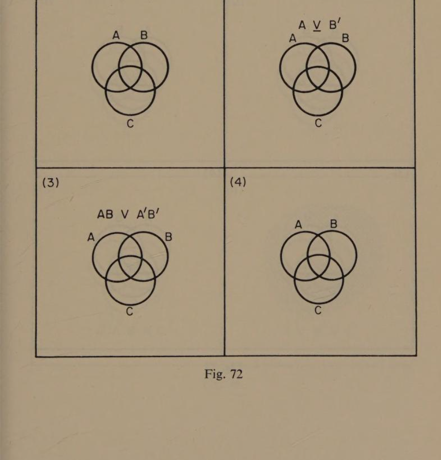
page 110 (h) Give the Algebra and diagram for:
[1] ‘I will go for a walk if it is fine or if it is raining.’ This means I am quite determined to go for a walk.
[2] This coffee is cold, it was scalded me. [sic]
[3] Match the diagram with Algebra.
[4] Draw the reversal of the diagram [3] and thus state the opposite algebraic expression.
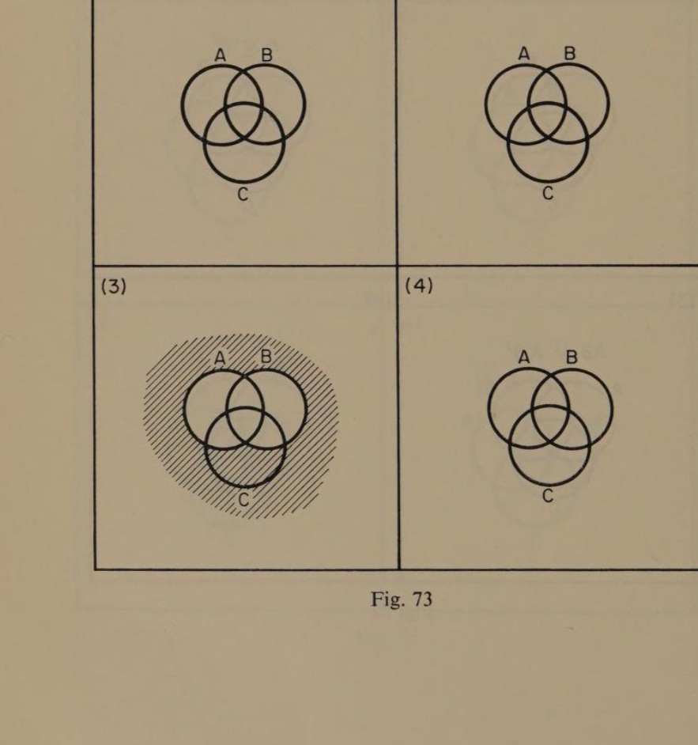
page 111 (i) Consider the meaning of: ‘Mr. Jones said he would stay at home that evening if the timber had been delivered and the weather was wet, unless his friend called for him in his car.’
[1] Draw the diagram and give the Algebra.
[2] Draw the diagram and give the Algebra if the word unless is changed to ‘or’ and ‘called’ becomes ‘did not call’.
[3] and [4] Draw the diagrams of the given Algebra.
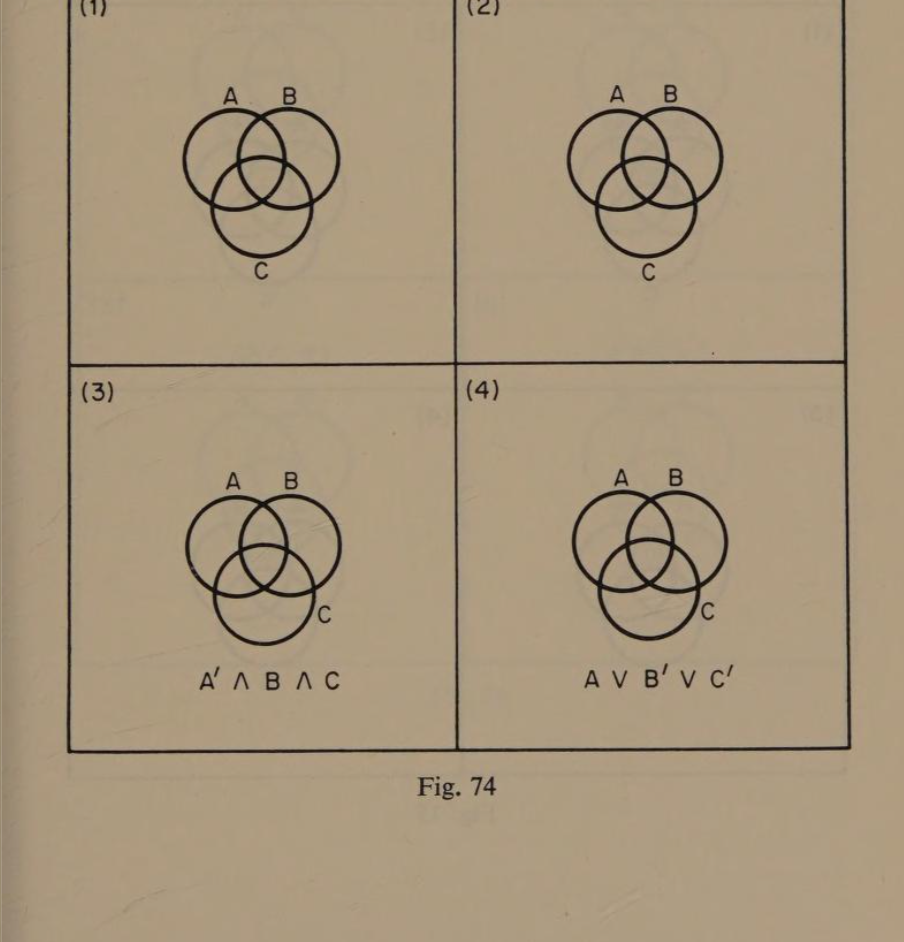
page 112 (j) Translate these statements into Algebra and match them with appropriate diagrams.
[1] Mother said she would do the washing if it was fine, and the water was hot, and Father wasn’t in.
[2] The pump will work unless the switch isn’t on, or a fuse is gone, or the machine is faulty.
[3] The candidate must know Shorthand, Typing, and Business Accountancy.
[4] I would like to go to Scotland, but not by land or sea.
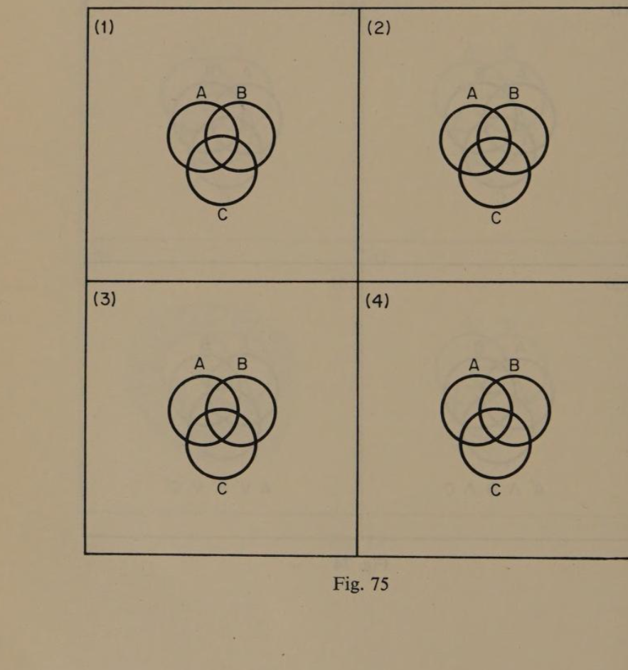
page 113 (k) Betty said she would marry Andy, Bill, or Charles. Her friend Eve said she wouldn’t marry either Charlie or Andy, but she would marry Bill.
[1] Give the Algebra and diagram for this.
[2] Give the Algebra and diagram for this.
[3] and [4] Draw the diagrams for the given Algebra.
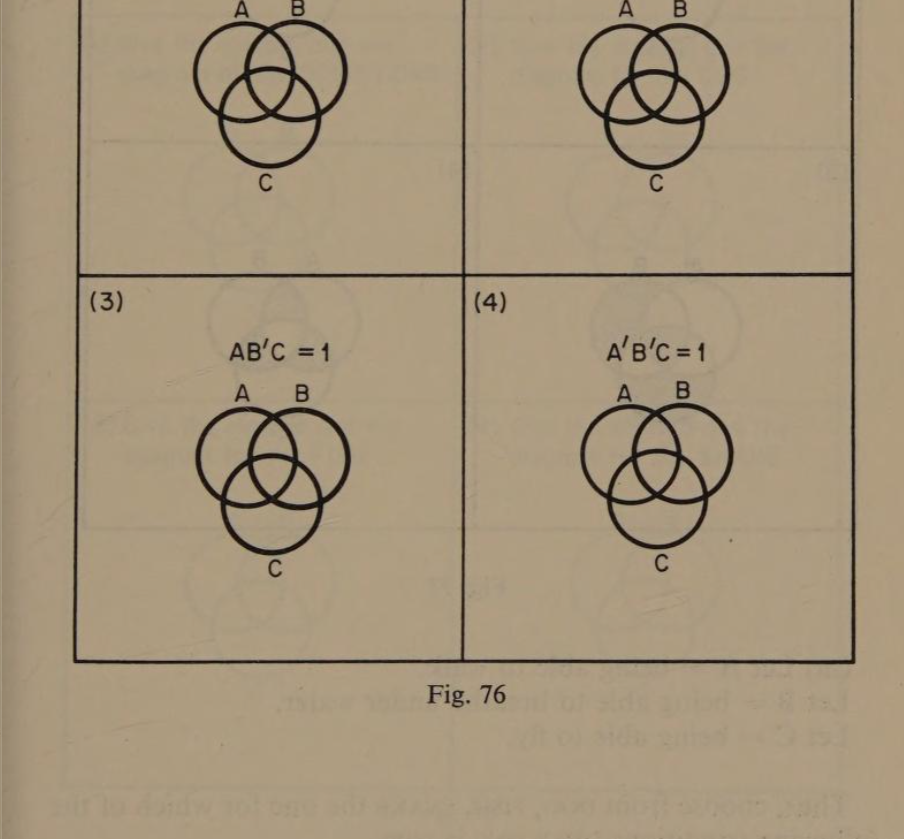
page 114 (l) In each of these give the diagram or the Algebra as appropriate.
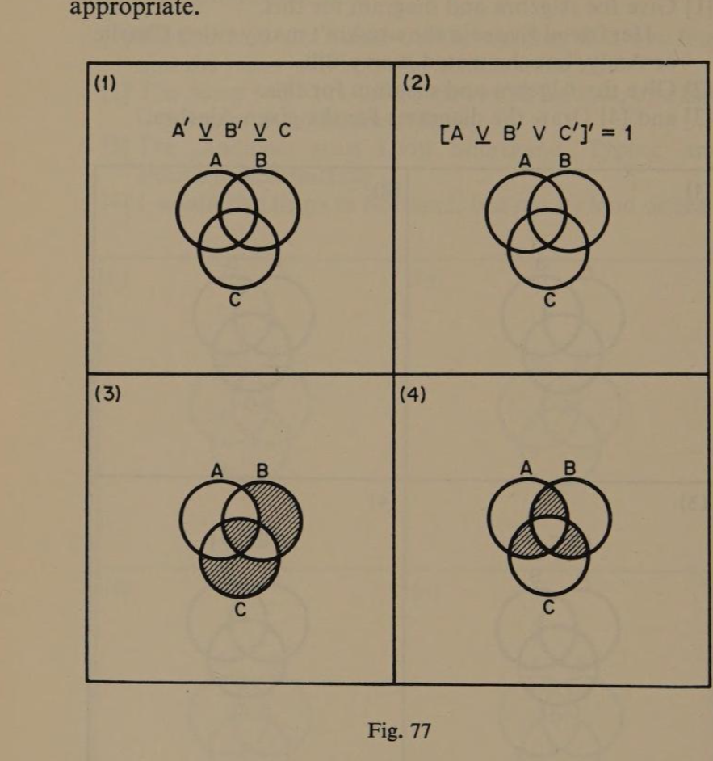
(m) Let A = being able to walk. Let B = being able to breathe under water. Let C = being able to fly. Thus, choose from DOG, FISH, SNAKE the one for which the following conditions only one is true. ‘It can walk: it can’t breathe under water: it can’t fly.’
page 115 First complete this truth table
| Required Condition | A ∨ B′ ∨ C′ | Truth Value |
|---|---|---|
| DOG | ||
| FISH | ||
| SNAKE |
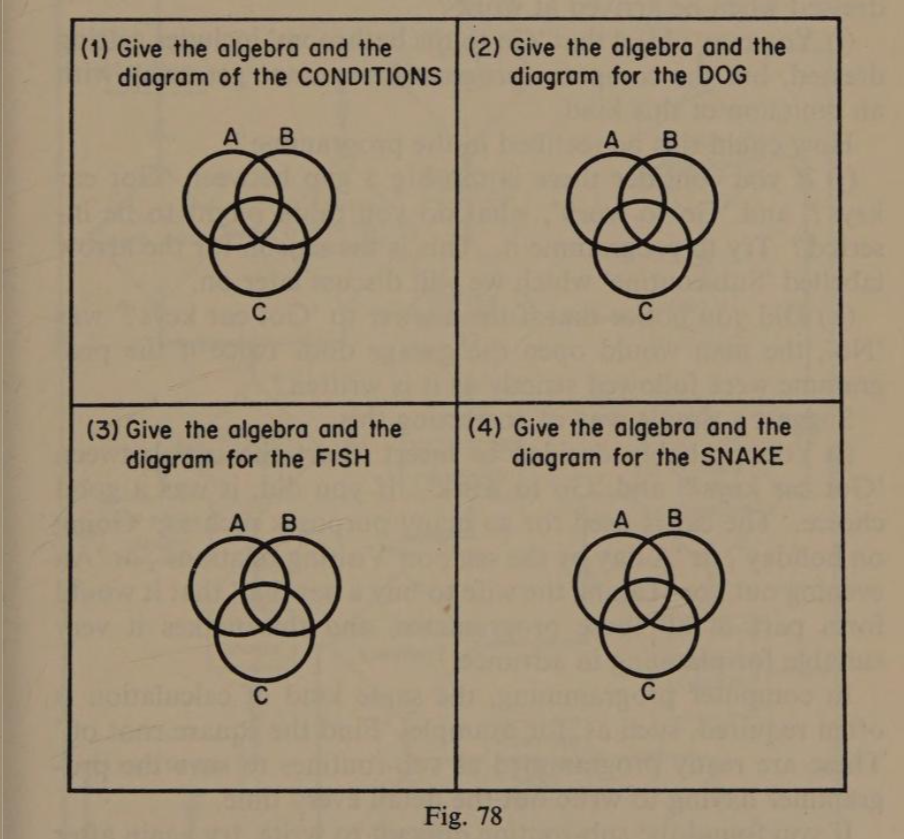
R.102. (a) What is the significant difference implied by the rhomboidal frames and the others in the flow-chart?
(b) The symbols 1 and 0 indicate the position of the appropriate switches. Look at the switch labelled ‘Is it dark?’ Would you say the next stage was ‘Turn on light’ or ‘Temperature Test’?page 116
(c) All the switches are shown in the positive position according to the question asked. If the facts in any one case were different, what would happen to the switch position?
(d) Is the programme ‘blocked’?
(e) What could happen to allow the programme to continue?
(f) How many ‘conditions’ are there in this programme?
(g) How many areas would there be if a Venn diagram could be drawn?
(h) In Section 101 it was pointed out that the programmer had to think for the machine because if he made any mistake the machine would follow it blindly. Strictly according to this programme, how would this man be dressed when he arrived at work?
(i) You may object that ‘Go to the bathroom’ includes getting dressed, but the computer programmer cannot get away with an omission of this kind. How could this be rectified in the programme?
(j) If you consider there is too big a gap between ‘Got car keys?’ and ‘Go to work’, what do you think ought to be inserted? Try to programme it. This is the reason for the arrow labelled ‘Sub-routine’ which we will discuss later on.
(k) Did you notice that if the answer to ‘Got car keys?’ was ‘No’, the man would have to walk to the garage door twice if the programme were followed strictly as it is written? Suggest a simple way of correcting this.
(l) You probably decided to insert ‘Start the car’ between ‘Got car keys?’ and ‘Go to work’. If you did, it was a good choice. The car is used for so many purposes that it would form part of all these programmes, and this makes it very suitable for planning in advance. In computer programming, the same kind of calculation is often required, such as, for example, ‘Find the square root of.’ These are ready programmed as sub-routines to save the programmer having to write out the detail every time.
If you found the sub-routine difficult to write, try again after you have been through this next example. It is called ‘Studying a Mathematics Text Book’, and provision has been made for all kinds of alternatives, such as being unable to read a foreign language; or the student being unable to read; or needing spectacles; or being unable to answer some of the questions; and so on. Go through it carefully.page 117 When you have fully understood it, try again to write out a ‘perfect programme’ for the sub-routine on ‘Starting the car’. Real programmes are written in numerical code called ‘machine language’. Different computers are designed to operate in different codes. Most of these are based on the Binary notation which we are going to discuss more thoroughly in the next chapter.
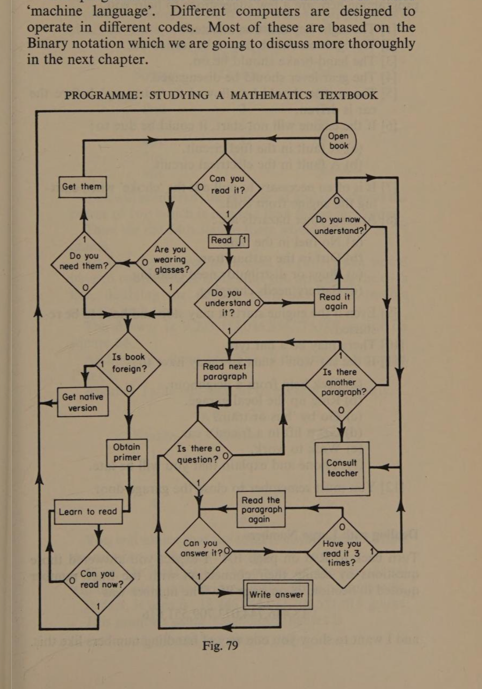
page 118 (m) Sub-routine—‘Starting a car.’ In case you are still having difficulty with the writing of this programme here are a few suggestions to help you.
- The right key must be selected.
- The ignition switch has to be turned on.
- The hand-brake should be on.
- The gear lever should be disengaged.
- The engine should be allowed to ‘warm up’ before the car is driven.
- If the engine will not start, it could be due to: (a) A fault in the fuel circuit. (b) A fault in the electrical circuit.
- It is often necessary to pull out the ‘choke’ when starting the engine from cold.
- Among other hazards are: (a) No fuel in the tank. (b) Dirt in the carburettor. (c) Plugs or distributor need cleaning. (d) Battery needs charging.
- Even if the engine starts it may stop and have to be re-started.
- There may be a flat tyre.
- If the car won’t start you may have to: (a) Seek help from a neighbour. (b) Ring up the local garage. (c) Go by ’bus or train. (d) Get a lift in a friend’s car. (e) Walk to work. (f) ’Phone and explain that you will be late.
- You must remember to close the garage door.
Dealing with Large Numbers
Turn back to R.98 on page 104. I expect you answered those questions by seeing their connection with the huge number quoted in Section 98 on page 95. The number was 18,446,744,073,709,551,616 and I want to show you one way of handling numbers like this.
page 119 [1] The Wheat on the Chessboard. When this story is first heard the statement that there isn’t enough wheat in the world to satisfy the conditions is often disbelieved. I expect you were surprised, so let’s check it. First, we make out a Table.
| Square | Grains | 2ⁿ |
|---|---|---|
| 1st | 1 | 2⁰ |
| 2nd | 2 | 2¹ |
| 3rd | 4 | 2² |
| 4th | 8 | 2³ |
| 5th | 16 | 2⁴ |
| nth | 2⁽ⁿ⁻¹⁾ |
You will notice that the number of grains is always the power of two which is one less than the square order. Thus, on the 64th square there would have to be 2⁶³ grains. To find the answer to Section 98 (a) [1] you would have to continue this table until you arrived at the 64th line, doubling the number each time. The answer is 9,223,372,036,854,775,808 grains on square 64. Additionally, there would be all the grains on squares 1 to 63.
| Square | Grains | Total |
|---|---|---|
| 1 | 1 | 1 |
| 2 | 2 | 3 |
| 3 | 4 | 7 |
| 4 | 8 | 15 |
| 5 | 16 | 31 |
You will notice that the total is always one less than the number on the next square. Thus, the total of all the grains on the chessboard will be one less than twice as many as are on square 64. In fact, it then is: 18,446,744,073,709,551,615 grains. This number, using 3 significant figures is approximately 18,400,000,000,000,000,000 grains.
page 120 The number 18,400,000,000,000,000,000 is too big for me to comprehend on its own. Let us try to see its significance in other terms. Even if the grains were small, ten side by side would measure 1 inch.
| All of them would stretch for | 1,840,000,000,000,000,000 inches. |
| Dividing by 12 gives this equal to | 153,000,000,000,000,000 feet. |
| Dividing by 3 gives this equal to | 51,000,000,000,000,000 yards. |
| This is approximately equal to | 30,000,000,000,000 miles. |
The distance between Earth and Sun is 93,000,000 miles. Even if the distance between them were 100,000,000 miles, there would be enough grains to form a close-packed band stretching from Earth to Sun approximately half a mile wide.
This calculation hasn’t helped me very much because the model I have created is as unreal as the number was. We think of quantities of grain in sacks or by weight. Let us calculate the weight of the grains. A grain is the smallest unit in our Table of Weights. From a table we will see that 7,000 grains are equivalent to 1 pound avoirdupois. Notice that our number is 18 followed by 18 zeros, i.e. 18 × 10¹⁸. Every time we divide by 10, the index will be reduced by one.
| No. of grains, to two significant figures | = 18 × 10¹⁸ |
| Dividing by 7,000 | = 2½ × 10¹⁵ pounds. |
| Dividing by 2,240 [i.e. 2¼ × 10³] | = 1 × 10¹² tons. |
Weight of wheat is approximately 1,000,000,000,000 tons. World production of wheat (1960), was 250,000,000 tons.
Note: The calculation in American units would be even easier: Dividing by 2,000 [i.e. 2 × 10³ short tons] = 1·25 × 10¹⁵ short tons. Weight of wheat is approximately 1,250,000,000,000 short tons. World production of wheat (1960) was 280,000,000 short tons. See tables on page xv.
page 121 [2] Shoeing the Rich Man’s Horse. I went into some detail regarding the last question in order to show you how various calculations may be shortened provided we maintain sufficient accuracy for our purpose. We were not concerned with the exact quantity of wheat, but only with comparing it to world production.
The standard method of shoeing horses is to use six nails in each fore-hoof, and eight nails in each hind-hoof. Thus, 28 nails are used altogether and in my illustration I showed 7 nail holes. To find out how much the shoeing cost if the first nail was one penny and every nail after was double the price of the one before, we start with finding 2²⁸ − 1. This equals 268,435,455.
| Thus cost in pence | = 268,435,455 pence |
| Dividing by 12 | = 22,369,621 shillings + 3d. |
| Dividing by 20 | = £1,118,481 1s. and 3d. |
The amount is so surprisingly large that we would have been content to know it was over £1,000,000. We would have come to this conclusion by using the previous method.
| Cost in pence | = 268 × 10⁶ |
| Cost in pounds | = 1 × 10⁶ [Approx. division by 240] |
| Conclusion: | it would cost over £1,000,000. |
Note: as American readers may use a decimal currency such as U.S.A. (see page xv) the calculation would be very simple. If the first nail cost 1 cent, then: Total cost = 268,435,455 cents = 2,684,354·55 dollars.
Here is an easy problem for you. You had two parents; four grand-parents; eight great-grand-parents, and so on. Counting a generation every thirty years, how many ancestors have you since the year A.D. 1? Surprising isn’t it. All men may not be brothers but they are certainly closely related.
page 122 [3] The Pyramid of Discs. Figure 80 represents a pile of four coins graded in size and value. It has to be rebuilt in a different place under these conditions: (1) the coins must be moved singly; (2) a larger value must never be put on a smaller; (3) there must never be more than three piles.
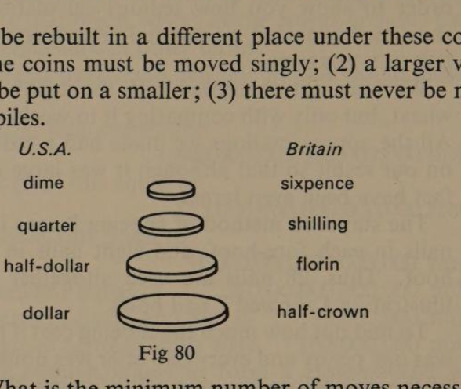
Problem: What is the minimum number of moves necessary? Answer: Fifteen. (Try it yourself before following Table 22.)
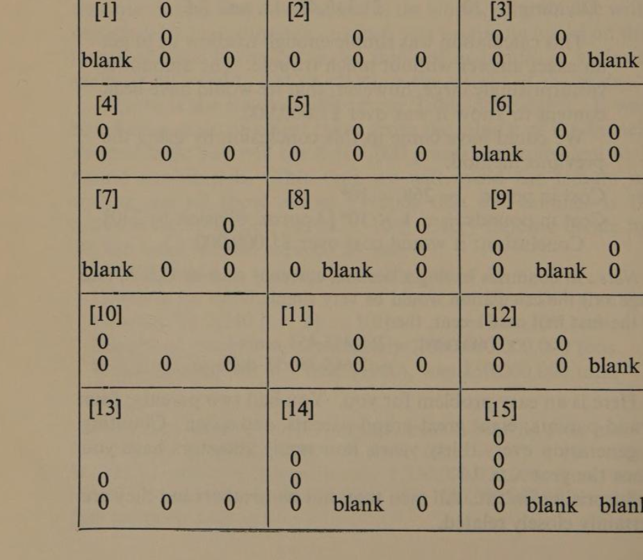
page 123 I recently bought a puzzle based on this problem. It was called ‘DISC-IT’. It was made of plastic and there were ten discs coloured alternately black and white. They were threaded on an upright rod as shown below. The problem was to rebuild
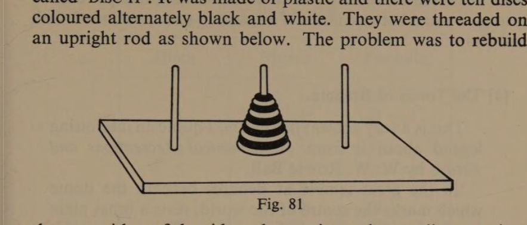
them on either of the side rods, moving only one disc at a time and never putting a larger on a smaller. This is exactly the same problem, but with more discs. We are more concerned with the Mathematics of it, and the question I ask is: What is the minimum number of moves necessary? Imagine first there was only one disc, then two, then three, then five [we know the answer to 4 discs]. When you have experimented, tabulate your results and formulate an hypothesis and then test it. Finally, answer my question. Copy and complete this table.
| Discs | Moves | Formula |
|---|---|---|
| 1 | 1 | |
| 2 | ||
| 3 | ||
| 4 | 15 | |
| 5 | ||
| 6 | ||
| 7 | ||
| 10 | ||
| n |
Estimating 1 move per second, what is the least time it would take to solve the ‘Disc-it’ puzzle?
page 124 [4] The Tower of Brahma. This is a very ancient puzzle and I quote an interesting legend about it from Mathematical Recreations and Essays by W. W. Rouse Ball.
‘In the great temple at Benares beneath the dome which marks the centre of the world, rests a brass plate in which are fixed three diamond needles, each a cubit high and as thick as the body of a bee. On one of these needles, at the creation, God placed sixty-four discs of pure gold, the largest disc resting on the brass plate and the others getting smaller and smaller up to the top one. This is the Tower of Brahma. Day and night unceasingly, the priests transfer the discs from one diamond needle to another, according to the fixed and immutable laws of Brahma, which require that the priest on duty must not move more than one disc at a time, and that he must place this disc on a needle so that there is no smaller disc below it. When the sixty-four discs shall have thus been transferred from the needle on which, at the creation, God placed them, to one of the other needles, tower, temple, and Brahmans alike will crumble into dust, and with a thunder-clap the world will vanish.’
R.102.(n) Question [1]. How many moves are necessary to rebuild the Tower of Brahma?
Question [2]. How long will it take reckoning one move per second?
Do not read on until you have attempted the two questions.
page 125 Your completed Table from page 123 should look like this:
| Discs | Moves | Formula |
|---|---|---|
| 1 | 1 | 2¹ − 1 |
| 2 | 3 | 2² − 1 |
| 3 | 7 | 2³ − 1 |
| 4 | 15 | 2⁴ − 1 |
| 5 | 31 | 2⁵ − 1 |
| 6 | 63 | 2⁶ − 1 |
| 7 | 127 | 2⁷ − 1 |
| 10 | 1,023 | 2¹⁰ − 1 |
| n | 2ⁿ − 1 |
To solve the ‘Disc-it’ puzzle requires 1,023 moves, and will take 17 minutes 3 seconds. The number of moves to rebuild the Tower of Brahma is 2⁶⁴ − 1. We have already met this number, which we approximate as 18 × 10¹⁸. I hope you used it in this form to obtain a rough estimate of how long it will take the priests to complete their task.
| At one move per second | = 18 × 10¹⁸ seconds |
| Dividing by 3,600 [i.e. 36 × 10²] | = 0·5 × 10¹⁶ hours |
| Dividing by 25 [i.e. 0·25 × 10²] | = 2 × 10¹⁴ (days) |
| Dividing by 400 [i.e. 4 × 10²] | = 0·5 × 10¹² (years) |
So that although we allowed the priests an extra hour in every day, and an extra thirty-five days in every year, it would still take them 500,000,000,000 years.